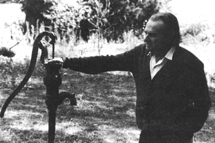

Peter van Dresser's first solar heated house (built in 1949 or 1950) has been vacant for several years and shows the wear and tear inflicted by vandals. The collector in the foreground was vented to the dwelling through underground ducts. The design was not entirely successful . . . the collector is too far from the house and its panels should be inclined rather than vertical. That's the remains of a Jacobs wind-driven generator on the pole behind the house and the ""dormer"" on the building's roof is actually a small room in which the self-contained electrical system's storage batteries were kept.